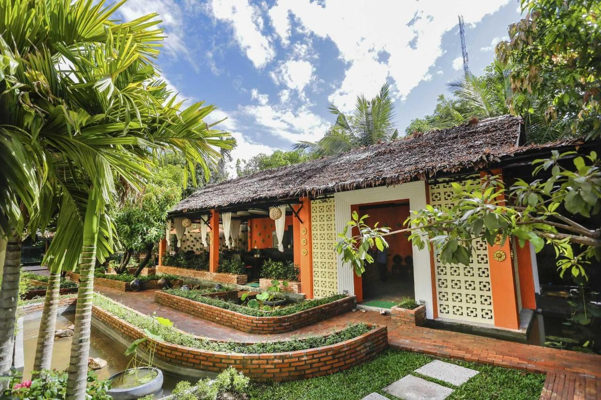

Quem somos nós
Nossa história: Nosso diferencial é o acolhimento familiar, amplo pátio e acomodações completas com quarto, banheiro, sala e mini cozinha. Além disso fornecemos café da manhã, wi-fi e pátio para estacionamento. Os apartamentos contam com uma cama de casal no quarto além de local para roupas, banheiro, sala com sofá cama de solteiro, mini cozinha (cooktop 2 bocas e frigobar) e varanda. Temos também a opção de cabine de dois dormitórios, sendo que cada dormitório possui uma cama de casal. Todos os quartos contam com ar condicionado e TV. Oferecemos churrasqueira coletiva.